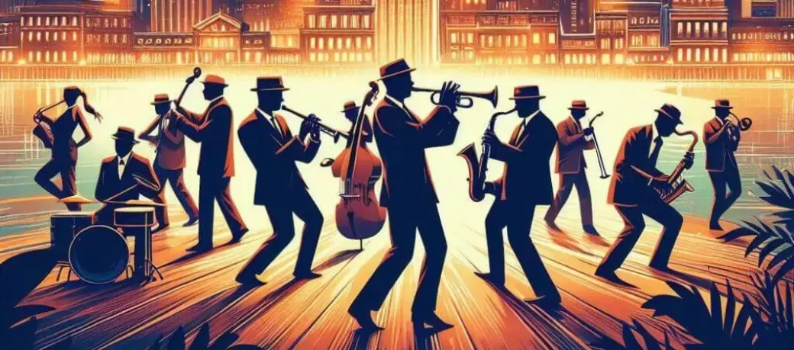
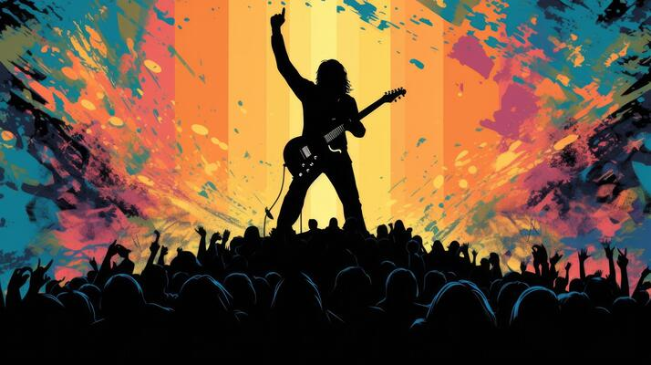

Genre Spotlight
Music genres are the foundation of our auditory world. Each genre carries its unique rhythm, history, and cultural significance, often reflecting the times and places in which they were born. Below, we dive deeper into the history and cultural impact of some of the most iconic genres.
Jazz
Jazz originated in the early 20th century in New Orleans. Known for its improvisational style, it became a cornerstone of modern music. Pioneers like Louis Armstrong and Miles Davis shaped the genre into a worldwide phenomenon, influencing countless other music styles.
Rock
Rock emerged in the 1950s as a blend of rhythm and blues, country, and gospel music. Legends like Elvis Presley, The Beatles, and Led Zeppelin brought this genre to global prominence. Its rebellious spirit defined entire generations.
Electronic
Electronic music leverages synthesizers, drum machines, and computers to create mesmerizing beats. From the pulsating rhythms of techno to the melodic layers of house, this genre thrives in clubs and festivals worldwide.
Classical
Classical music stands as one of the oldest and most refined genres, with roots tracing back to the Renaissance and Baroque eras. Composers like Beethoven and Mozart created timeless masterpieces that continue to inspire.

Hip-Hop
Born in the Bronx in the 1970s, hip-hop grew from street culture to a global movement. Through powerful lyrics and beats, artists like Tupac Shakur and Kendrick Lamar tell stories of resilience, struggle, and triumph.